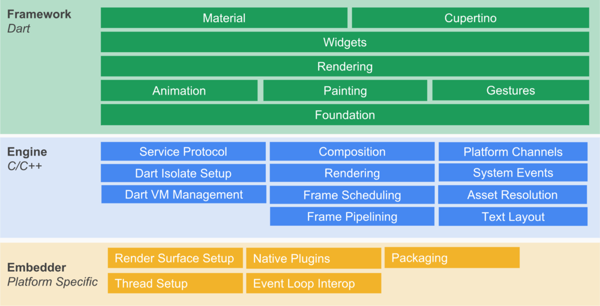
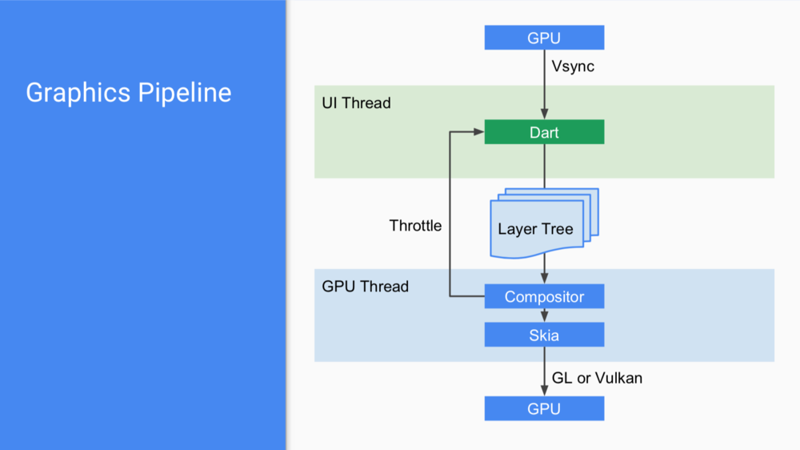

“Write once, run anywhere”，在移动互联网时代是一个难以抗拒的诱惑。
自2018年2月27日发布Beta版以来，Flutter在国内移动端的「讨论」越来越活跃。再加之咸鱼团队的押注加持，越来越多的团队开始打起了Flutter的主意。
是的，”Write once, run anywhere”，在移动互联网时代是一个难以抗拒的诱饵。接入端的分化，对服务商是一个成本问题，产品亦在朝着淡化接入端的差异性的方向发展。H5、React Native、Weex、Lua、Xamarin都不失为一种值得考虑的方案。而小程序这两年的强势突进，各个互联网Giant不得不警惕和防守。而对开发人员来说，又是另一抉问题的抉择了。
Flutter不是第一个跨平台开发的框架，当然也不会是最后一个。与上述提到的方案不同的是，Flutter不是对原生平台底层框架的桥接，而是另起炉灶基于Skia引擎进行渲染。但毕竟UI只是业务开发的一部分，具体还看性能及框架提供的能力。
本文先介绍上手指南之环境搭建（Mac平台），再来简单看看Flutter的基础原理知识。
# 环境要求
- Mac OS 64位
- 磁盘空间700MB（不包括IDE
- 命令行工具：bash、curl、git、mkdir、rm、unzip、which
- Xcode 9.0+(请确保xcode-select指向正确的版本)
# 下载SDK
下载地址可在官网获取，本次使用地址：v1.7.8（约600M）
下载完成后解压缩SDK到工作目录。可考虑预加载依赖项、执行命令flutter precache 。
# 环境配置
终端执行flutter doctor检查环境，检查是否需要安装其他依赖项来完成。
可能遇到报错：
GIH-D-11754% flutter doctor
Doctor summary (to see all details, run flutter doctor -v):
[✓] Flutter (Channel stable, v1.7.8+hotfix.3, on Mac OS X 10.13.6 17G65, locale
zh-Hans-CN)
[✗] Android toolchain - develop for Android devices
✗ Unable to locate Android SDK.
…
If the Android SDK has been installed to a custom location, set
ANDROID_HOME to that location.
You may also want to add it to your PATH environment variable.
⣟ideviceinfo returned an error:
ERROR: Could not connect to lockdownd, error code -17
修改bash配置，将flutter的可执行文件路径配置到PATH中：
export PATH=/Users/cc/Kernel/0xFlutter/flutter/bin:$PATH
export PUB_HOSTED_URL=https://pub.flutter-io.cn
export FLUTTER_STORAGE_BASE_URL=https://storage.flutter-io.cn
后面两个是避免网络环境问题，可使用国内站点。
若已安装Android Studio，配置：
export ANDROID_HOME=/Users/cc/DevEnv/Android/sdk
#Android 模拟器路径
export PATH=${PATH}:${ANDROID_HOME}/emulator
#Android tools 路径
export PATH=${PATH}:${ANDROID_HOME}/tools
#Android 平台工具路径
export PATH=${PATH}:${ANDROID_HOME}/platform-tools
#Android NDK路径
export ANDROID_NDK_HOME=/Users/cc/DevEnv/Android/ndk/android-ndk-r10e
若暂时不使用Android开发，可暂不安装Android Studio（而且这货也挺大的） 。
# 创建Demo
终端运行：flutter create
可能会遇到失败的情况：
…
All done!
ideviceinfo returned an error:
ERROR: Could not connect to lockdownd, error code -17
继续。
安装将flutter安装到设备的工具：（官方）
brew install –HEAD libimobiledevice
brew install ideviceinstaller ios-deploy cocoapods
#注：若已安装旧版本可能有不兼容情况，删除重装
安装libimobiledevice失败，需要安装usbmuxd：（若原已安装，可以先brew unlink usbmuxd ）
brew install –HEAD usbmuxd
重新安装工具：
brew install –HEAD usbmuxd
brew link usbmuxd
brew install –HEAD libimobiledevice
brew install ideviceinstaller ios-deploy cocoapods
此时，flutter run 是成功的了，可以跑demo。
（在启动模拟器后可以运行，若存在多台设备，需要-d指定；若需真机调试，需要确保设备id已加入调试设备列表）
# IDE及配置
一般建议使用VS Code，上面也有很多相关插件，比如Dart、Flutter这些是必装的。看自己喜好。
# Flutter基本知识
基本环境配置完，可以来了解一下Flutter基本知识了。以下是Flutter官方给出的系统架构图：

可以看出Flutter框架分为三层：Framework层、Engine层和Embedder层。
Embedder层是平台相关的实现，主要包括事件循环、打包、线程设置、原生插件、渲染相关；
Engine层则是Flutter的核心，使用C++开发的，主要包括Skia渲染引擎、Dart 虚拟机、文本布局渲染等；
Framework层是Dart语言实现的应用层。最顶层是Material与Cupertino两种Widge，往下则是渲染、绘画、动画、手势等基础功能的封装了。
那Flutter是怎么渲染的呢？可以看看官方提供的流程图：

小结
关于后续。个人感觉按目前单凭宣称的内置Skia渲染引擎不足以撬动整块大石头。何况Dart是单线程执行模型，很多以前遇见的问题，换成Flutter依然需要解决。热加载不一定一直试一直爽。而且Flutter需要学习新的语言及框架，相对RN等等的门槛还是提高了一点。
建议就是，不妨跟进与关注吧。
Author: Jason
Permalink: http://blog.knpc21.com/ios/flutter-dev-start/
文章默认使用 CC BY-NC-SA 4.0 协议进行许可，使用时请注意遵守协议。
Comments